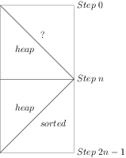

Programming Pearls笔记之〇

本想这是一本像《算法导论》或者《计算机程序设计艺术》那样的书，但很遗憾，这不是一本关于算法的书．但从这本书中也学到了一些算法知识．准确地说，这本书主要是讲如何将程序写得更快更省内存．好的算法只是其中的一个手段．为了实现这个目的，作者从多个层面上进行性能优化，有时甚至会将一个简洁的循环写成一个冗长的ｓｗｉｔｃｈ．．ｃａｓｅ．．结构．其中涉及到的算法与数学的关系都不太紧密，所以比较容易理解．这本书更适合参加工作的程序员来读．
这本书中的内容大都是发表在作者主持的《ＡＣＭ通讯》上＂编程珠玑＂专栏里的，后经作者修改后汇成了这本书．每个专栏后面都会有相应的习题．有些习题很不错．接下来我会用几篇笔记记录书中对自己有用的一些算法知识．个人认为如果只是想学习其中的算法知识，只要看下这几篇笔记就行了，当然书中的一些优化思想，笔记中不会记录，另外，书中的堆排序在大学的《数据结构》课中有，这里不再记录．
但对于一个程序员，这本书是很值得阅读的，首先其中的算法不会像其他的算法书中那样艰涩难懂，让人望而生畏．然后就是书中会有一些在语言课上学不到的东西．比如在这本书里我第一次听说ｍａｌｌｏｃ不但比较费时，而且很费内存．还有就是书中的优化思想既不属于语言老师的任务也不属于数据结构老师的任务，也就是说在大学课程中可能很难学到．
本书分成三个部分，第一部分是基础知识，第二部分讲的是性能优化，第三部分是前面一些技术的应用．其实前后逻辑结构并不那么严紧，各专栏都有自己的主题．
书中有些想法很新颖．比如对于数组平移的问题．要求将ａｂｃｄｅｆｇｈ向左循环平移３位．具体的算法是先将ａｂｃ翻转得到ｃｂａｄｅｆｇｈ，然后再翻转ｄｅｆｇｈ，得到ｃｂａｈｇｆｅｄ，最后翻转整个数组得到结果ｄｅｆｇｈａｂｃ．书中的示意图巧妙地使用两只手来表示这个操作过程．这个图比较难画，就不给出了．还有堆排序中对于排序过程中的数组状态给出了一个示意图，设计得很巧妙，如下：

图一 堆排序示意图
另外书中涉及到的东西还是比较多的，因为作者要从多个层次进行考虑．比如作者考虑过缓冲区大小对于程序速度的影响．也提到过编译器优化带来的问题．既涉及高层的算法，又涉及底层的代码．所幸这些东西出现得不多，另外书中对于一些基本概念都作了介绍，所以整个看来还是很简单的，即使没有学习过数据结构课程，应该也能读懂．